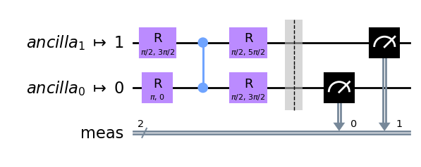
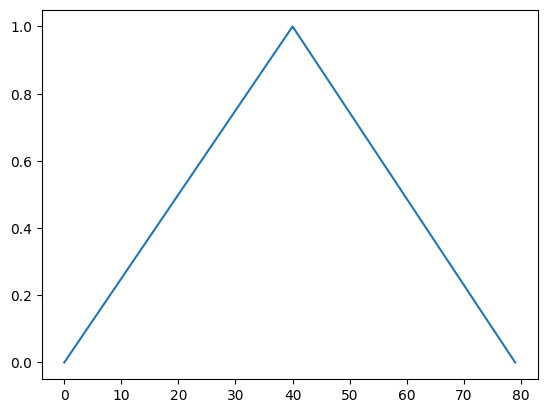
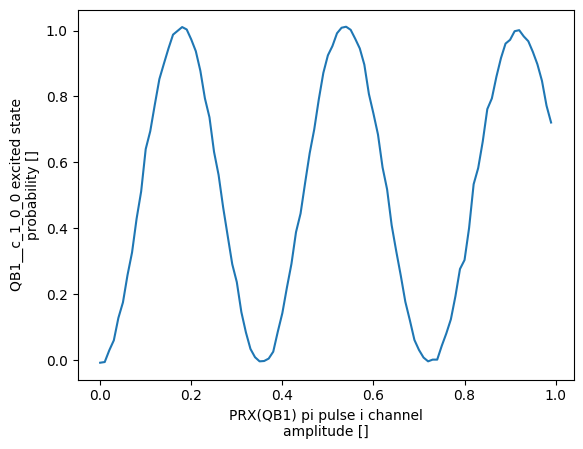

Custom Gates and Gate Implementations#
This notebook demonstrates how to work with user-defined quantum operations and gate implementations that go beyond the standard gate set.
Each quantum operation is associated with at least one GateImplementation which translates circuit-level concepts to lower-level instructions accepted by IQM Server. This example shows how the user can
Select a non-default implementation for a gate
Add a custom implementation for an existing gate
Add a custom gate and implementation by using existing gates as building blocks (composite gates)
Define new pulse waveforms for implementations
Environment setup#
Please refer to the Quick Start.ipynb for basic usage, terminology, and environment setup. It is recommended to run also
Configuration and Usage.ipynb and Sweeps.ipynb before this notebook.
from pprint import pprint
from IPython.core.display import HTML
import numpy as np
import matplotlib.pyplot as plt
from dataclasses import dataclass
from qiskit import QuantumCircuit
from qiskit.compiler import transpile
from iqm.iqm_client.util import print_env_vars
from iqm.qiskit_iqm import IQMProvider
from iqm.pulla.pulla import Pulla
from iqm.pulla.utils_qiskit import qiskit_to_pulla, get_qiskit_compiler
from iqm.pulse.gates import PRX_Samples
from iqm.pulse.gates.prx import PRX_CustomWaveforms
from iqm.pulse.playlist.waveforms import Waveform
from iqm.pulse.gate_implementation import CompositeGate
from iqm.pulse.quantum_ops import QuantumOp
from iqm.pulse.playlist.visualisation.base import inspect_playlist
from exa.common.control.sweep.sweep import Sweep
from exa.common.control.sweep.option import CenterSpanOptions, StartStopOptions
print_env_vars()
pulla = Pulla()
provider = IQMProvider()
backend = provider.get_backend()
def example_qiskit_circuit():
qc = QuantumCircuit(2, 2)
qc.x(0)
qc.cx(0, 1)
qc.h(0)
qc.measure_all()
transpiled_qc = transpile(qc, backend=backend, layout_method='sabre', optimization_level=3)
return transpiled_qc
example_qiskit_circuit().draw(output='mpl', style='clifford', idle_wires=False)

pulla.get_standard_compiler().show_stages()
Circuit-level Stages (1)
Stage 0: circuit_stage Perform Circuit-level transformations.
| Pass 0: validate_settings | list[iqm.pulse.circuit_operations.Circuit] |
|
Full Signature
(
Documentation
circuits: list[iqm.pulse.circuit_operations.Circuit],settings: exa.common.data.setting_node.SettingNode) -> list[iqm.pulse.circuit_operations.Circuit] Validate the settings for circuit execution options (only some combinations make sense).
Raises an error if full MOVE gate tracking is used without move gate validation. Raises a warning if terminal
measurements would be used with active reset.
Args:
circuits: The circuits to compiler.
settings: The settings tree to validate.
Returns:
The circuits as they were.
Raises:
CircuitError: if full MOVE gate tracking is used without move gate validation.
|
|
| Pass 1: map_components | Iterable[iqm.pulse.circuit_operations.Circuit] |
|
Full Signature
(
Documentation
circuits: collections.abc.Iterable[iqm.pulse.circuit_operations.Circuit],component_mapping: dict[str, str] | None,context: dict[str, typing.Any]) -> Iterable[iqm.pulse.circuit_operations.Circuit] Maps the logical component names in a sequence of instructions to the corresponding physical component names.
Modifies ``instructions`` in place. If no mapping is provided, returns the circuits as they are.
Args:
circuits: The circuits to compiler.
component_mapping: Mapping of logical component names to physical component names.
``None`` means the identity mapping.
context: The Compiler context.
|
|
| Pass 2: subscribe_and_probe | list[iqm.pulse.circuit_operations.Circuit] |
|
Full Signature
(
Documentation
circuits: list[iqm.pulse.circuit_operations.Circuit],settings: exa.common.data.setting_node.SettingNode,context: dict[str, typing.Any],additionally_subscribed_components: list[str],additionally_probed_components: list[str],probe_all: bool = True,convert_terminal_measurements: bool = True) -> list[iqm.pulse.circuit_operations.Circuit] Add additional terminal measurements to the circuit and modify measurement instruction arguments.
The additional measurements can be subscribed to (i.e. they'd return measurement data) or be just probe pulses
for potentially improving the terminal measurement fidelity in case the measurement calibration is not 100%
factorizable.
In addition, the pass hashes all readout keys since there is a data processing limit for the readout key length.
The keys should then be unmapped in the return data post-processing. The terminal measurements can also be converted
to the ``measure_fidelity`` operation which is calibrated to maximize the fidelity while not necessarily being
projective (QNDness is typically not important for the terminal measurement).
Args:
circuits: The circuits to compile.
settings: The settings tree.
context: The Compiler context.
additionally_subscribed_components: Additional components to measure in the terminal measurement (besides the
ones explicitly measured in the circuit itself).
additionally_probed_components: Additional components to send the probe pulse to besides the
ones explicitly measured in the circuit itself). The measurement data will not be collected from these
components.
probe_all: Whether to send to probe pulse to all components in the terminal measurement (overrides
``additionally_probed_components``).
convert_terminal_measurements: Whether to convert the terminal measurement data to the ``measure_fidelity``
operation that is calibrated to maximize the fidelity while not necessarily being QND. This option will
be turned to ``False`` automatically if active reset is used (active reset is not reliable in the presence
of leakage).
Returns:
The circuits with the aforementioned modifications.
|
|
| Pass 3: validate_circuits | list[iqm.pulse.circuit_operations.Circuit] |
|
Full Signature
(
Documentation
circuits: list[iqm.pulse.circuit_operations.Circuit],builder: iqm.pulse.builder.ScheduleBuilder,context: dict[str, typing.Any],move_gate_validation: bool = True,validate_prx: bool = True,validate_calset: bool = False) -> list[iqm.pulse.circuit_operations.Circuit] Validate circuits and aggerate metrics data from them.
Args:
circuits: The circuits to compile.
builder: The ScheduleBuilder.
context: The compiler context.
move_gate_validation: Whether to do the move gate validation.
validate_prx: Whether to do the validation.
validate_calset: Whether to validate the calibration set (if the calibration point used is not from a
calibration set, this validation might not make sense).
|
|
Pulse-level Stages (5)
Stage 0: circuit_resolution Resolve Circuits into TimeBoxes.
| Pass 0: resolve_circuits | list[iqm.pulse.timebox.TimeBox] |
|
Full Signature
(
Documentation
circuits: list[iqm.pulse.circuit_operations.Circuit] | list[iqm.pulse.timebox.TimeBox],builder: iqm.pulse.builder.ScheduleBuilder,scheduling_strategy: str = 'ASAP') -> list[iqm.pulse.timebox.TimeBox] Resolve the circuits to timeboxes.
Args:
circuits: The circuit to resolve.
builder: The schedule builder.
scheduling_strategy: Scheduling strategy to be used in the resolved TimeBoxes (see :class:`.TimeBox`).
Returns:
List of TimeBoxes (one TimeBox per circuit).
|
|
Stage 1: timebox_stage Perform TimeBox-level transformations.
| Pass 0: multiplex_readout | list[iqm.pulse.timebox.TimeBox] |
|
Full Signature
(
Documentation
timeboxes: list[iqm.pulse.timebox.TimeBox],timebox_input: bool) -> list[iqm.pulse.timebox.TimeBox] Merge any MultiplexedProbeTimeBoxes inside a TimeBox representing a circuit.
This pass optimizes a situation where multiple "measure" gates on disjoint set of loci exist sequentially in the
circuit.
Without optimization, each gate would result in a separate trigger event, which results in worse performance.
For example, with the measurement instructions [M(QB1), M(QB2), M(QB3)], we'd first measure QB1, then QB2, then QB3.
This optimization merges the measurement timeboxes, so that we'll measure QB1, QB2, and QB3 at the same time
(if the hardware channel configuration allows it), corresponding to M(QB1, QB2, QB3).
Goes through the children of `circuit_box`, and places them in the same temporal order.
Whenever a MultiplexedProbeTimeBox is encountered (i.e. from a measure gate), it is merged with the previous pending
MultiplexedProbeTimeBox and left pending.
If any other box type with colliding loci is encountered, first places the pending MultiplexedProbeTimeBox.
This essentially delays all measurements until the last possible moment.
This stage pass is skipped if the circuits to be compiled were given in the TimeBox-level, as the logic within does
not work for deep recursive TimeBoxes.
Args:
timeboxes: Timeboxes representing circuits.
timebox_input: Whether the circuits were inputted already in the TimeBox format.
Returns:
New TimeBoxes with the same content, except with some MultiplexedProbeTimeBoxes merged.
|
|
| Pass 1: prepend_heralding | list[iqm.pulse.timebox.TimeBox] |
|
Full Signature
(
Documentation
timeboxes: list[iqm.pulse.timebox.TimeBox],builder: iqm.pulse.builder.ScheduleBuilder,context: dict[str, typing.Any],add_heralding: bool = False) -> list[iqm.pulse.timebox.TimeBox] Add the heralding measurement TimeBox to all circuits (locus: active components that can be measured).
Args:
timeboxes: Timeboxes representing circuits.
builder: The ScheduleBuilder.
context: Compiler context.
add_heralding: Whether to add the heralding measurement timebox to the schedules.
Returns:
The timeboxes with the prepended heralding measurement.
|
|
| Pass 2: prepend_reset | list[iqm.pulse.timebox.TimeBox] |
|
Full Signature
(
Documentation
timeboxes: list[iqm.pulse.timebox.TimeBox],builder: iqm.pulse.builder.ScheduleBuilder,context: dict[str, typing.Any],active_reset_cycles: int | None = None) -> list[iqm.pulse.timebox.TimeBox] Add a reset timebox to all circuits for all active components.
Args:
timeboxes: TimeBoxes representing circuits.
builder: The ScheduleBuilder.
context: The compiler context.
active_reset_cycles: Number of active reset cycles applied. `None` means no active reset cycles, in which case
reset is done by relaxation (waiting).
Returns:
The timeboxes with the prepended reset.
|
|
Stage 2: timebox_resolution Resolve TimeBoxes into Schedules.
| Pass 0: resolve_timeboxes | list[iqm.pulse.playlist.schedule.Schedule] |
|
Full Signature
(
Documentation
timeboxes: list[iqm.pulse.timebox.TimeBox],builder: iqm.pulse.builder.ScheduleBuilder,neighborhood: int = 1) -> list[iqm.pulse.playlist.schedule.Schedule] Resolve the timeboxes to schedules.
Args:
timeboxes: TimeBoxes representing circuits.
builder: The ScheduleBuilder.
neighborhood: The neighborhood for the scheduling (see: :meth:`.ScheduleBuilder.resolve_timebox`).
Returns:
The time-resolved schedules (one for each circuit).
|
|
Stage 3: dynamical_decoupling Apply dynamical decoupling sequences to idle qubits in the Schedules.
| Pass 0: apply_dd_strategy | list[iqm.pulse.playlist.schedule.Schedule] |
|
Full Signature
(
Documentation
schedules: list[iqm.pulse.playlist.schedule.Schedule],builder: iqm.pulse.builder.ScheduleBuilder,context: dict[str, typing.Any],dd_is_disabled: bool = True,use_standard_dd_strategy: bool = True,DDStrategy_merge_contiguous_waits: bool = True,DDStrategy_target_qubits: list[str] | None = None,DDStrategy_skip_leading_wait: bool = True,DDStrategy_skip_trailing_wait: bool = True,DDStrategy_gate_sequences_ratio: list[int] | None = None,DDStrategy_gate_sequences_gate_pattern_xy: list[str] | None = None,DDStrategy_gate_sequences_align: list[str] | None = None) -> list[iqm.pulse.playlist.schedule.Schedule] Insert dynamical decoupling sequences into the schedules, if dynamical decoupling is enabled.
DDStrategy can also be read from the Compiler context, from under the key `"DDStrategy"`. In this case, the
strategy provided will override the DDStrategy options given as args to this function.
Args:
schedules: Schedules representing the compiled circuits.
builder: The ScheduleBuilder.
context: Compiler context.
dd_is_disabled: Set to ``False`` to enable dynamical decoupling.
use_standard_dd_strategy: Whether to use the standard decoupling strategy (overrides the below arguments).
DDStrategy_target_qubits: The qubits to which DD is applied (``None`` means apply to every applicable qubit).
DDStrategy_merge_contiguous_waits: Whether to merge contiguous waits (see :class:`.DDStrategy`).
DDStrategy_skip_leading_wait: Whether to skip leading waits (see :class:`.DDStrategy`).
DDStrategy_skip_trailing_wait: Whether to skip trailing waits (see :class:`.DDStrategy`).
DDStrategy_gate_sequences_ratio: Minimal durations for the Wait to be replaced with the DD sequence
(in PRX gate durations) in the DD sequence.
DDStrategy_gate_sequences_gate_pattern_xy: XY Gate patterns in the DD sequence. If you want to provide custom
PRX angles instead of XY patterns, you must provide the DDStrategy in the Compiler context.
DDStrategy_gate_sequences_align: Alignments in the DD sequence ("asap", "alap" or "center")
Returns:
THe schedules where applicable Waits are replaced with DD sequences.
|
|
Stage 4: schedule_stage Perform Schedule-level transformations.
| Pass 0: apply_move_gate_phase_corrections | list[iqm.pulse.playlist.schedule.Schedule] |
|
Full Signature
(
Documentation
schedules: list[iqm.pulse.playlist.schedule.Schedule],builder: iqm.pulse.builder.ScheduleBuilder,context: dict[str, typing.Any],move_gate_frame_tracking_mode: str = 'full') -> list[iqm.pulse.playlist.schedule.Schedule] Apply calibrated phase corrections if MOVE gates are used.
|
|
| Pass 1: clean_schedule | list[iqm.pulse.playlist.schedule.Schedule] |
|
Full Signature
(
Documentation
schedules: list[iqm.pulse.playlist.schedule.Schedule],builder: iqm.pulse.builder.ScheduleBuilder) -> list[iqm.pulse.playlist.schedule.Schedule] Remove non-functional instructions from `schedules`.
|
|
Finalization Stages (2)
Stage 0: schedule_resolution Translate Schedules into a hardware-executable Playlist.
| Pass 0: build_playlist_and_merge_contexts | iqm.models.playlist.playlist.Playlist |
|
Full Signature
(
Documentation
schedules: list[iqm.pulse.playlist.schedule.Schedule],builder: iqm.pulse.builder.ScheduleBuilder,context: dict[str, typing.Any],compute_execution_time_metrics: bool = False,ignore_input_components: bool = False) -> iqm.models.playlist.playlist.Playlist Build the playlist from the schedules and merge the contexts for individual sweep spots.
When merging the context, the active components are the union of the active components in each sweep spot
(unless explicitly given by the user). The default context keys are not merged (these should not be modified
by any of the sweep spots), and any other keys in the context will be merged to mapping from the sweep spot id
to the context entry.
Args:
schedules: Schedules to build into a Playlist.
builder: The ScheduleBuilder.
context: The Compiler context.
compute_execution_time_metrics: Whether to compute schedule duration and minimum execution time for circuits.
ignore_input_components: If True, components are always replaced with the ones found in context.
Returns:
The Playlist containing schedules.
|
|
Stage 1: job_creation Package the Playlist and metadata into a job description to be submitted to IQM Server.
| Pass 0: create_run_definition | iqm.station_control.interface.models.run.RunDefinition |
|
Full Signature
(
Documentation
playlist: iqm.models.playlist.playlist.Playlist,context: dict[str, typing.Any],data_size_safety_switch: bool = True,force_ragged_data: bool = False) -> iqm.station_control.interface.models.run.RunDefinition Create MQE-style RunDefinition.
Args:
playlist: The Playlist to create the RunDefinition for.
context: The Compiler context.
data_size_safety_switch: Whether to throw an error with exceedingly large return data sizes (set to ``False``
if you want to still run the job and are sure the DB and/or the stack can handle it).
force_ragged_data: Whether to force the return data to the sparse ragged format even if the
dimensions are representable as a cartesian product.
Returns:
The RunDefinition.
|
|
Post-processing Stages (2)
Stage 0: construct_run_result Aggregate raw hardware data into a structured run result object.
| Pass 0: construct_run_result | iqm.cpc.core.run_result.RunResult |
|
Full Signature
(
Documentation
pulla_data: iqm.cpc.compiler.post_process.PullaData,context: dict[str, typing.Any]) -> iqm.cpc.core.run_result.RunResult Construct the dataset and attach it to a RunResult object.
Unmaps the hashed readout keys.
Args:
pulla_data: The Pulla data (run data and sweep data).
context: The Compiler context.
Returns:
The RunResult.
|
|
Stage 1: construct_data_variables Map measured counts and states to high-level user variables.
| Pass 0: create_ragged_data_index | iqm.cpc.core.run_result.RunResult |
|
Full Signature
(
Documentation
run: iqm.cpc.core.run_result.RunResult) -> iqm.cpc.core.run_result.RunResult Adds ``MultiIndex`` to the trigger index dimension for accessing ragged data via the hard sweep values.
If there is a non-uniform number of readout triggers for n RO label across the segments of the playlist, the data
cannot be reshaped into an N-dimensional box with the dims
``(
|
|
| Pass 1: extract_counter_group_data | iqm.cpc.core.run_result.RunResult |
|
Full Signature
(
Documentation
run: iqm.cpc.core.run_result.RunResult) -> iqm.cpc.core.run_result.RunResult Extracts the data for all counter readout groups into their own data variables in the dataset.
Args:
run: the run result.
Returns:
The run result with new data variables for each counter readout group added.
|
|
| Pass 2: rename_data_variables | iqm.cpc.core.run_result.RunResult |
|
Full Signature
(
Documentation
run: iqm.cpc.core.run_result.RunResult,context: dict[str, typing.Any]) -> iqm.cpc.core.run_result.RunResult Rename the data variables in the dataset and optionally change their data types.
Args:
run: The RunResult object.
context: Compiler context.
Returns:
The post-processed run results with the data variables renamed.
|
|
| Pass 3: classify_two_states | iqm.cpc.core.run_result.RunResult |
|
Full Signature
(
Documentation
run: iqm.cpc.core.run_result.RunResult) -> iqm.cpc.core.run_result.RunResult Classify the complex data using the calibrated threshold.
If the observations are not available, a warning is logged.
Args:
run: The run result.
Returns:
The run result with the discriminated shots added.
|
|
| Pass 4: average_single_shot_data | iqm.cpc.core.run_result.RunResult |
|
Full Signature
(
Documentation
run: iqm.cpc.core.run_result.RunResult) -> iqm.cpc.core.run_result.RunResult Average the shots (or more generally the average bins) into a new data variable in the dataset.
If the data is already averaged, it is returned unchanged.
Args:
run: The RunResult object.
Returns:
The RunResult with the single shot data variables averaged.
|
|
| Pass 5: contrast_data | iqm.cpc.core.run_result.RunResult |
|
Full Signature
(
Documentation
run: iqm.cpc.core.run_result.RunResult) -> iqm.cpc.core.run_result.RunResult Add contrast for several components/readouts.
Contrast is calculated from complex integrated data with PCA. If a data variable is not complex (i.e. it is already
discriminated) it is retained as it is.
Args:
run: The RunResult object.
Returns:
The RunResult with the contrast data variable added for all complex variables.
|
|
| Pass 6: add_counter_averaged_readout | iqm.cpc.core.run_result.RunResult |
|
Full Signature
(
Documentation
run: iqm.cpc.core.run_result.RunResult) -> iqm.cpc.core.run_result.RunResult Add single-qubit excited state probabilities from the multi qubit counter results to the dataset.
Args:
run: The run result.
Returns:
The run result with new data variables for averaged readout for each component added.
|
|
| Pass 7: compute_excitation_probability_from_data | iqm.cpc.core.run_result.RunResult |
|
Full Signature
(
Documentation
run: iqm.cpc.core.run_result.RunResult) -> iqm.cpc.core.run_result.RunResult Compute the excited state probability for several components.
For complex readout data, this is done using the averaged threshold readout observations and for
threshold discriminated data using the 01 and 10 assignment error observations. If the
aforementioned observations are not available, a warning is thrown.
Args:
run: The RunResult object.
Returns:
The RunResult with the excited state probability added into the dataset.
|
|
| Pass 8: add_counts_for | iqm.cpc.core.run_result.RunResult |
|
Full Signature
(
Documentation
run: iqm.cpc.core.run_result.RunResult) -> iqm.cpc.core.run_result.RunResult Add single-qubit excited state probabilities from the multi qubit counter results to the dataset.
This is done only if the dimensions of the single qubit probabilities are equal.
Args:
run: The run result.
Returns:
The run result with the counter data added.
|
|
| Pass 9: rename_measure_ancilla_variables | iqm.cpc.core.run_result.RunResult |
|
Full Signature
(
Documentation
run: iqm.cpc.core.run_result.RunResult) -> iqm.cpc.core.run_result.RunResult Rename composite measure labels in data variables.
A composite measure label is of the format `"
|
|
| Pass 10: process_metadata | iqm.cpc.core.run_result.RunResult |
|
Full Signature
(
Documentation
run: iqm.cpc.core.run_result.RunResult) -> iqm.cpc.core.run_result.RunResult Process the metadata in the RunResult.
- Set the target data variables
- Process tuples serialised into lists back into tuples.
Args:
run: The RunResult.
Returns:
The RunResult with the metadata processed.
|
|
Custom gates: Composite gates#
IQM Pulse allows the user to define composite gates: gates consisting of other gates. Composite gates are particularly useful because they allow reusing the calibrated of data of the other gates. Furthermore, it is possible to use unique calibration data for the member gates inside a composite gate.
Define a prx implementation that acts like a normal prx, except it implements X with 2 pulses with a 100 ns wait between them.
The __call__ method produces a TimeBox using IQM Pulse’s ScheduleBuilder.
It is worth mentioning that the composite gate is not restricted to using only registered gates; it could equally well return a TimeBox with lower level instructions.
class StretchedX(CompositeGate):
registered_gates = ('prx',) # Use the standard prx as a building block
def __call__(self, angle: float, phase: float):
normal_prx = self.build("prx", self.locus)
if angle != np.pi:
return normal_prx(angle, phase)
half = normal_prx(np.pi / 2, phase)
return half + self.builder.wait(self.locus, 100e-9, rounding=True) + half
Register a new gate custom_x, which StretchedX implements, and make it compatible with the circuit-level prx, by declaring it having the same parameters.
Then change the first prx in the IQM Pulse circuit to use the new implementation.
circuits, compiler = qiskit_to_pulla(pulla, backend, example_qiskit_circuit())
compiler.add_implementation('custom_x', 'StretchedX', StretchedX, quantum_op=QuantumOp('custom_x', params={'angle': (float,), 'phase': (float,)}))
c = circuits[0]
for inst in c.instructions:
if inst.name == 'prx':
inst.name = 'custom_x'
job_definition, _ = compiler.compile(circuits)
Inspecting the schedule, the X gate in the circuit is indeed split into two pulses with a wait in between:
HTML(inspect_playlist(job_definition.sweep_definition.playlist, [0]))
Custom gates: Custom waveforms#
Next, change the pulse waveforms of a PRX gate.
The quickest way to test how some waveform performs is probably to just provide np.array samples and use the dedicated custom samples PRX implementation PRX_Samples. However, providing some samples is not enough to actually use the new waveform. At least the I amplitude needs to be calibrated. This can be done very easily by reproducing the Rabi experiment.
Defining a triangular waveform, one can indeed calibrate a PRX gate with it. Probably not as good as the PRX waveform, but Pulla is allowing for any highly customized waveforms.
# 40 points rising, 40 points falling
# NOTE: the number of samples define the duration of the pulse via the sampling rate (2GHz usually).
y_up = np.linspace(0, 1, 40, endpoint=False)
y_down = np.linspace(1, 0, 40)
y = np.concatenate((y_up, y_down))
plt.plot(y)
[<matplotlib.lines.Line2D at 0x7b7f418ccfd0>]

compiler = get_qiskit_compiler(pulla, backend)
# Rabi circuit
qc = QuantumCircuit(1,1)
qc.x(0)
qc.measure(0,0)
compiler.add_implementation("prx", "samples", PRX_Samples) # register a custom samples implementation of PRX
settings = compiler.get_settings(circuits=[qc])
settings.gate_definitions.prx.default_implementation = "samples" # set the samples implementaion as the default
settings.gates.prx.samples.QB1.set_from_dict({ # provide the triangular samples as calibration data
"amplitude_q": 0.0, # we don't worry about calibrating Q amplitude here
"i":{"samples": y},
"q": {"samples": np.zeros(80)}
})
# run Rabi experiment to determine the amplitude_i
amp_sweep = Sweep(parameter=settings.gates.prx.samples.QB1.amplitude_i.parameter, data=StartStopOptions(0.0, 0.99, 100).data)
job_definition, context = compiler.compile(circuits=[qc], components=["QB1"], settings=settings, sweeps=[amp_sweep])
job = pulla.submit_playlist(job_definition, context=context)
job.wait_for_completion()
result = job.result(compiler)
# plot the QB1 e state probability
result.dataset["QB1__c_1_0_0_excited_state_probability"].plot()
[06-08 17:48:22;I] Waiting for job 019ea7b4-bf15-7ae0-aab1-e1b74042d4ec to finish...
[<matplotlib.lines.Line2D at 0x7b7f1813f810>]

Next, pick the amplitude value corresponding to the half amplitude of the shown Rabi oscillations, and set it as the I amplitude via settings.gates.prx.samples.QB1.amplitude_i = <half amplitude value>.
Parametrized waveforms#
Most of the canonical gate implementations are not defined in terms of samples, but instead parametrized. How this works is that the gate implementation has the calibration parameter duration (see e.g. settings.gates.prx.drag_crf.QB1) given in seconds. And the waveform itself may have any number of additional parameters that define its form (e.g. settings.gates.prx.drag_crf.QB1.full_width). Users can of course also create a parametrized waveform and use it in the PRX gate.
The easiest way to do this is to inherit from the PRX_CustomWaveforms implementation while defining the I and Q parametrized waveforms.
@dataclass(frozen=True)
class RaisedCosine(Waveform):
r"""Raised cosine pulse.
.. math::
f(t) = \frac{1}{2} (1 + \cos((t - c) \pi / w)) \quad \text{when} \: |t - c| \le w, 0 \: \text{otherwise}
where :math:`c` is :attr:`center_offset`, and :math:`w` is :attr:`width`.
The raised cosine has a finite support.
Args:
width: half-width of the support
center_offset: center offset
"""
width: float
center_offset: float = 0.0
def _sample(self, sample_coords: np.ndarray) -> np.ndarray:
offset_coords = sample_coords - self.center_offset
return np.where(
np.abs(offset_coords) <= self.width,
0.5 * (1 + np.cos(offset_coords * np.pi / self.width)),
0.0,
)
@dataclass(frozen=True)
class RaisedCosineDerivative(Waveform):
r"""Scaled derivative of the RaisedCosine pulse.
.. math::
f(t) = -\sin((t - c) \pi / w) \quad \text{when} \: |t - c| \le w, 0 \: \text{otherwise}
where :math:`c` is :attr:`center_offset`, and :math:`w` is :attr:`width`.
Args:
width: half-width of the support
center_offset: center offset
"""
width: float
center_offset: float = 0.0
def _sample(self, sample_coords: np.ndarray) -> np.ndarray:
offset_coords = sample_coords - self.center_offset
return np.where(
np.abs(offset_coords) <= self.width,
-0.5 * np.sin(offset_coords * np.pi / self.width),
0.0,
)
class PRX_RaisedCosine(PRX_CustomWaveforms, wave_i=RaisedCosine, wave_q=RaisedCosineDerivative):
"""Implementation of PRX using a raised cosine pulse."""
center_offset: float = 0.0
The class attributes of the waveforms define the calibration data they require. The PRX_CustomWaveforms class adds some more. Add the new prx implementation to the compiler to check what calibration data it needs:
circuits, compiler = qiskit_to_pulla(pulla, backend, example_qiskit_circuit())
compiler.add_implementation('prx', 'raised_cosine', PRX_RaisedCosine)
settings = compiler.get_settings(circuits=example_qiskit_circuit())
settings.gates.prx.raised_cosine.QB1
(gates.prx.raised_cosine.QB1)
gates.prx.raised_cosine.QB1: (Name: "gates.prx.raised_cosine.QB1", class:SettingNode) 0
| duration | not set/auto | s | pi pulse duration |
| amplitude_i | not set/auto | pi pulse I channel amplitude | |
| amplitude_q | not set/auto | pi pulse Q channel amplitude | |
| width | not set/auto | s | width of rc |
| center_offset | 0 | s | center_offset of rc |
Make one of the prx gates in the circuit use our new implementation:
circuits[0].instructions[0].implementation = "raised_cosine"
Compiling this circuit right now would fail with an error:
Error in stage "circuit" pass "map_implementations_for_loci": Circuit 0: No calibration data for 'prx.raised_cosine' at ('QB1',).
(The locus (‘QB1’,) may differ in your output due to the stochastic nature of routing.)
Of course the gate needs to be calibrated, see the prevous example of Rabi experiment on a triangular wave. Provided some placeholder calibration data:
custom_cal_data = {
"duration": 40e-09,
"amplitude_i": 0.1662,
"amplitude_q": -0.00802,
"width": 20e-9,
"center_offset": 3e-9,
}
for qubit in compiler.chip_topology.qubits:
settings.gates.prx.raised_cosine[qubit].set_from_dict(custom_cal_data)
Now the compilation succeeds and raised_cosine was used once. The schedule visualization allows to verify that the pulse shape is indeed different on the first prx instance.
playlist, context = compiler.compile(circuits, settings=settings)
pprint(context['circuit_metrics'][0].gate_loci["prx"])
{'drag_crf_sx': Counter({('QB10',): 2, ('QB9',): 1}),
'raised_cosine': Counter({('QB9',): 1})}